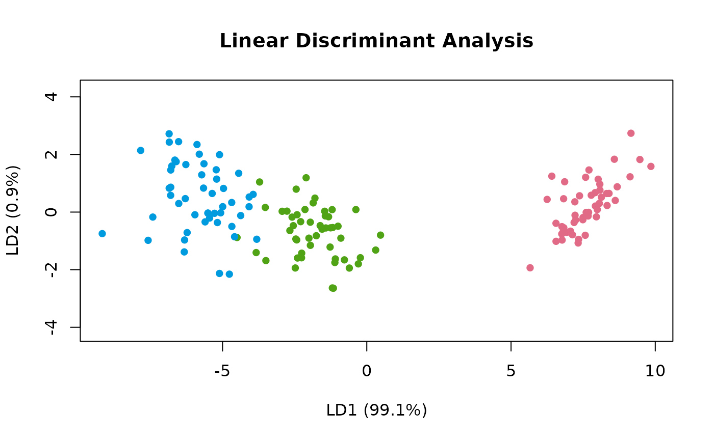

Supervised ordination of samples from a few features: Fisher's linear
discriminants, the axes along which known groups are furthest apart
relative to the variation within them. Gives the same scores,
coefficients and proportion of trace as MASS::lda(), and, up to a
constant factor, the same scores as scikit-learn's
LinearDiscriminantAnalysis.
Usage
lda(
counts,
groups,
data = NULL,
margin = 1L,
norm = "none",
pseudocount = NULL,
prior = NULL,
n_axes = NULL,
cpus = n_cpus()
)Arguments
- counts
A numeric matrix of feature values (samples \(\times\) features), or any of the table types listed under "Input Types". It needs more samples than features: at least the number of features plus the number of groups (see "Singular tables").
- groups
The known group of each sample: a vector or factor with one value per sample, matched to the samples in
countsby name when both are named, else in the same order. Or, whendatais given, the name of one of its columns (or a vector with one value per row ofdata). Every distinct value is a group, numbers included; there must be at least two. A factor's unused levels are dropped.- data
Sample metadata: a data frame with one row per sample, holding the column named in
groups. Rows are matched to the samples incountsby row name, and rows for other samples are ignored; without row names, they must be in the same order as the samples. Default:NULL.- margin
The margin containing samples.
1if samples are rows,2if samples are columns. Ignored whencountsis a special object class (e.g.phyloseq). Default:1- norm
Normalize the incoming counts. Options are:
'none': No transformation.'percent': Relative abundance (sample abundances sum to 1).'hellinger': Square root of relative abundance (the Hellinger transformation).'binary': Unweighted presence/absence (each count is either 0 or 1).'clr': Centered log ratio.'rclr': Robust centered log ratio.
Default:
'none'.- pseudocount
Value added to counts to handle zeros when
norm = 'clr'. Ignored for other normalization methods. See Pseudocount section.- prior
The prior probability of each group: a numeric vector with one positive value per group, named by group or else in the order of the groups (a factor's levels, otherwise sorted), adding up to 1. It weights each group's mean in the centre of the scores and in the between-group variance, as in
MASS::lda(). Default:NULL, the proportion of samples in each group.- n_axes
The number of discriminant axes to return. Default:
NULL, which means as many as there are, up to 3. There are at most \(g - 1\) for \(g\) groups, and no more than the number of features; a largern_axesis reduced to that.- cpus
How many parallel processing threads should be used. The default,
n_cpus(), will use all logical CPU cores.
Value
A numeric matrix with one row per sample and one column per
discriminant axis, named "LD1", "LD2", etc., as described in
"Ordination result" below. The values are the discriminant scores, as
predict(MASS::lda(...))$x gives them. Attributes:
method:"lda".eig: The ratio of the between-group to the within-group variance (mean squares) of the scores on each axis:MASS::lda()'ssvd, squared (the "canonical F statistics").prop: Each axis's proportion of the sum ofeigover all the discriminant axes:MASS::lda()'s "proportion of trace", and scikit-learn'sexplained_variance_ratio_.scaling: The coefficients of the discriminants: one row per feature and one column per axis (MASS::lda()'sscaling). The scores are the table, minusprior %*% means, timesscaling.means: The mean of each feature in each group: one row per group and one column per feature.prior: The prior probabilities, named by group.groups: Each sample's group, as a factor whose levels are the groups, in the order of the rows ofmeans.
Details
Method
Let \(X\) be the normalized table, \(m_k\) the mean of group \(k\)
(of \(n_k\) samples, with prior \(\pi_k\)), and
\(\bar{x} = \sum_k \pi_k m_k\). With \(W\)
the pooled within-group covariance (each sample minus its group's mean,
divisor \(n - g\)) and \(B\) the between-group covariance
\(\sum_k n \pi_k (m_k - \bar{x})(m_k - \bar{x})^T / (g - 1)\)
(with the default priors, \(n \pi_k = n_k\)), the discriminant axes
\(a\) maximize \(a^T B a / a^T W a\), the ratio of the
between-group to the within-group variance of the scores (Fisher 1936).
They are the eigenvectors of \(W^{-1} B\), and the ratios its
eigenvalues, eig. Each axis is scaled so that the pooled within-group
variance of its scores is 1, and the scores are
\((x - \bar{x})^T a\), for every sample \(x\).
As in scikit-learn's "svd" solver, \(W\) and \(B\) are never
formed: the axes come from the SVD of the within-group residuals (each
feature scaled by its within-group standard deviation), which spheres
\(W\), then the SVD of the weighted group means in that sphered
space. Axes whose singular value is below \(10^{-4}\) times the first
are dropped, as both references do.
Singular tables
LDA needs \(W\) to be invertible: more samples than features plus
groups, and no feature that is constant within every group or a linear
combination of others within groups (as relative abundances that add up
to 1 are). Otherwise lda() stops with an error (scikit-learn and
MASS::lda() drop the null directions with a warning, but the axes
they then report depend on rounding). Microbiome tables have far more
taxa than samples, so run LDA on a few axes of an unconstrained
ordination instead, such as pcoa(dm, n_axes = 5) or pca()'s
scores: lda(pcoa(dm, n_axes = 5), groups). This is canonical analysis
of principal coordinates (Anderson & Willis 2003).
Validate the separation
LDA is supervised: it looks for the directions that separate the
groups, so its plots separate them, if not as readily as plsda()'s,
even when the groups don't differ. Don't read the plot as evidence of a
difference. Test it with a permutation test of the distances, such as
permanova(), or estimate the error rate of classifying new samples by
cross-validation.
Matching MASS and scikit-learn
lda() gives the same scores, scaling, group means and proportion of
trace as MASS::lda() and its predict(), up to the sign of each axis,
and eig is the square of its svd. scikit-learn's
LinearDiscriminantAnalysis(solver = "svd") divides the within-group
covariance by \(n\) rather than \(n - g\), so its transform()
scores and scalings_ are larger by \(\sqrt{n / (n - g)}\);
its explained_variance_ratio_ is prop. Its priors that don't add up
to 1 are rescaled with a warning; here they are an error.
Same names in other packages
MASS::lda() shares its name with ecodive's lda(), and MASS is often
attached: whichever package was attached last masks the other's. Write
ecodive::lda(), or use count_ord(), which always runs ecodive's, to
be sure. Elsewhere, "LDA" also means latent Dirichlet allocation (topic
models), and LEfSe's "LDA score" is an effect size from this method.
Axis signs and reproducibility
An axis's sign is arbitrary, so different software can return mirror
images of the same axis. lda() flips each axis so that its largest
score in absolute value is positive, and flips its column of scaling
with it. Results are identical from run to run and for any number of
cpus.
Ordination result
Every ordination function (pcoa(), pca(), rpca(), dbrda(),
capscale(), mds(), nmds(), isomap(), tsne(), umap(), and so
dist_ord()) returns the same kind of
object: a numeric matrix with one row per sample and one column per
axis, so that it can go straight into a data frame. Rows are
named after the samples, when the input has names. Columns are named
after the method: "PCoA1", "PC1", "RPCA1", "dbRDA1" or "CAP1"
(then "MDS1" for unconstrained axes), "MDS1", "NMDS1",
"Isomap1", "TSNE1", "UMAP1", and so on.
Its attributes always begin with these three, in this order, each with one value per column:
method: The method's ID, e.g."pcoa"or"nmds".eig: Each axis's eigenvalue, on the method's own scale:pcoa()andisomap()give the eigenvalues of Gower's centered matrix (sums of squares);pca()andrpca()give variances, which arepcoa()'s divided by \(n - 1\) for \(n\) samples; anddbrda()andcapscale()followvegan, which also divides by \(n - 1\) when any distance is 4 or more.NAformds(),nmds(),tsne(), andumap(), which have no eigenvalues.prop: The proportion of the total variance (or inertia) that each axis explains. Unlikeeig, it is comparable between methods, so use it to label axes.NAwhere it isn't defined.
Attributes particular to the method follow them. The matrix has class
"ecodive_ord" (as well as "matrix"), so that print() lists the
other attributes by name rather than in full, and plot() draws the
samples on the first two axes, labelled from the attributes, with any
loadings, constraints and centroids on top (see plot.ecodive_ord()).
plot(ord, "Species", iris) colours the samples by a column of
metadata. Subsetting with [, or as.data.frame(), gives a plain
matrix or data frame without the attributes.
Input Types
The counts parameter is designed to accept a simple numeric matrix, but
seamlessly supports objects from the following biological data packages:
phyloseqrbiomSummarizedExperimentTreeSummarizedExperiment
For large datasets, standard matrix operations may be slow. See
vignette('performance') for details on using optimized formats
(e.g. sparse matrices) and parallel processing.
Pseudocount
The pseudocount parameter is only relevant when norm = 'clr'.
Zeros are undefined in the centered log-ratio (CLR) transformation. If
norm = 'clr', pseudocount is NULL (the default), and
zeros are detected, the function uses half the minimum non-zero value
(min(x[x>0]) / 2) and issues a warning.
To suppress the warning, provide an explicit value (e.g., 1), or
replace the zeros first with replace_zeros(), whose
result needs no pseudocount.
Why this matters: The choice of pseudocount is not neutral; it acts as a weighting factor that can significantly distort downstream results, especially for sparse datasets. See Gloor et al. (2017) and Kaul et al. (2017) for open-access discussions on the mathematical implications, or Costea et al. (2014) for the impact on community clustering.
See aitchison for references.
References
Fisher, R. A. (1936). The use of multiple measurements in taxonomic problems. Annals of Eugenics, 7(2), 179-188. doi:10.1111/j.1469-1809.1936.tb02137.x
Anderson, M. J., & Willis, T. J. (2003). Canonical analysis of principal coordinates: a useful method of constrained ordination for ecology. Ecology, 84(2), 511-525. doi:10.1890/0012-9658(2003)084[0511:CAOPCA]2.0.CO;2
Venables, W. N., & Ripley, B. D. (2002). Modern Applied Statistics with S (4th ed.). Springer. doi:10.1007/978-0-387-21706-2
Pedregosa, F., et al. (2011). Scikit-learn: machine learning in Python. Journal of Machine Learning Research, 12, 2825-2830.
Examples
# LDA of iris: three groups, so two discriminant axes.
ord <- lda(iris[, 1:4], 'Species', iris)
plot(ord)

attr(ord, 'prop')
#> [1] 0.991212605 0.008787395
attr(ord, 'scaling')
#> LD1 LD2
#> Sepal.Length 0.8293776 0.02410215
#> Sepal.Width 1.5344731 2.16452123
#> Petal.Length -2.2012117 -0.93192121
#> Petal.Width -2.8104603 2.83918785
# Microbiome tables have more taxa than samples: use a few PCoA axes.
grp <- rep(c('a', 'b'), length.out = nrow(ex_counts))
pc <- pcoa(bray(ex_counts), n_axes = 2)
lda(pc, grp)
#> LD1
#> Saliva 0.01780549
#> Gums -0.03303610
#> Nose 1.44716764
#> Stool -1.43193704
#>
#> lda: 4 samples, 1 axis; % of variance: 100.0
#> Attributes: method, eig, prop, scaling, means, prior, groups
# Supervised: always validate the separation, e.g. with PERMANOVA.
permanova(bray(ex_counts), grp, permutations = 99)
#> Permutational multivariate analysis of variance (PERMANOVA)
#>
#> F = 0.7124, p = 0.68, z = -0.6451
#> Permutations: 99 (free)
#>
#> Model R2 = 0.2626. Model tested as a whole:
#>
#> Df SumOfSqs R2 F Pr(>F)
#> Model 1 0.3390 0.2626 0.712 0.68
#> Residual 2 0.9517 0.7374
#> Total 3 1.2907 1.0000